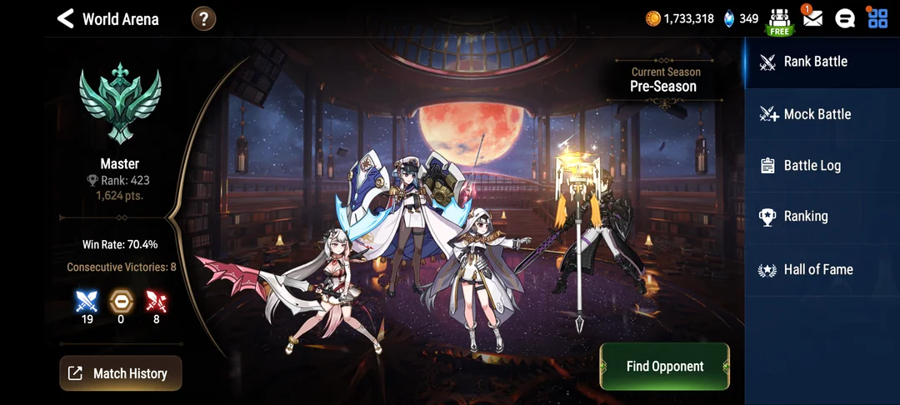
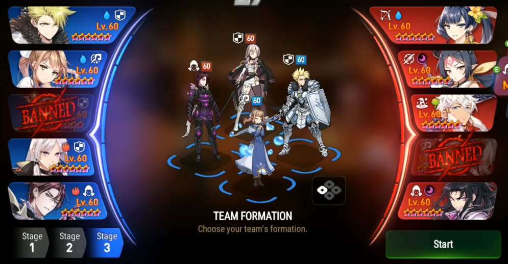

RTA (Real-Time Arena) is the main play mode in Epic Seven. When you start a match against an opponent, each of you will use four heroes to compete.
Before the battle begins, both players pre-ban two heroes in advance — but neither will know the other’s choices. Then, the draft phase starts. The first player picks one hero they own, and the second player picks two heroes. The first player then picks next two heroes. Finnaly, both players will chose 5 heroes.
Only one unique hero can appear in a match. In other words, if your opponent picks Hero A, you cannot choose that hero. After both players have selected five heroes, each bans one of the opponent’s heroes. Note that the third hero you pick has ban protection , meaning it cannot be banned. Both players’ ban choices remain hidden until the battle begins.
